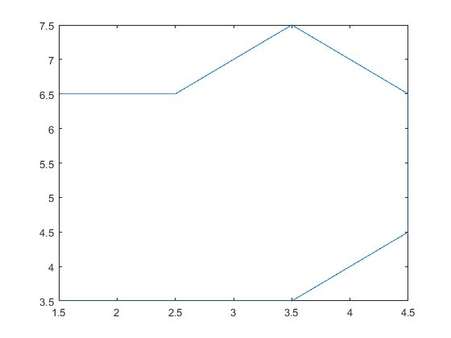

Optimal_path = [];
QUEUE_COUNT = size(QUEUE, 1);
xval = QUEUE(QUEUE_COUNT, 2);
yval = QUEUE(QUEUE_COUNT, 3);
temp = QUEUE_COUNT;
while(((xval ~= xTarget) || (yval ~= yTarget)) && temp > 0)
temp = temp - 1;
xval = QUEUE(temp, 2);
yval = QUEUE(temp, 3);
end
i = 1;
Optimal_path(i, 1) = xval;
Optimal_path(i, 2) = yval;
if ((xval == xTarget) && (yval == yTarget))
inode = 0;
parent_x = QUEUE(index(QUEUE, xval, yval), 4);
parent_y = QUEUE(index(QUEUE, xval, yval), 5);
while(parent_x ~= xStart || parent_y ~= yStart)
i = i + 1;
Optimal_path(i, 1) = parent_x;
Optimal_path(i, 2) = parent_y;
inode = index(QUEUE, parent_x, parent_y);
parent_x = QUEUE(inode, 4);
parent_y = QUEUE(inode, 5);
end;
j = size(Optimal_path, 1);
p = plot(Optimal_path(j, 1) + .5, Optimal_path(j, 2) + .5, 'bo');
j = j - 1;
for i = j : -1 : 1
pause(.25);
set(p, 'XData', Optimal_path(i, 1) + .5, 'YData', Optimal_path(i, 2) + .5);
drawnow;
end;
Optimal_path(j+1,1) = xStart;
Optimal_path(j+1,2) = yStart;
plot(Optimal_path(:, 1) + .5, Optimal_path(:, 2) + .5);
else
pause(1);
h = msgbox('Oops! No path exists to the Target!', 'warn');
uiwait(h, 5);
end
